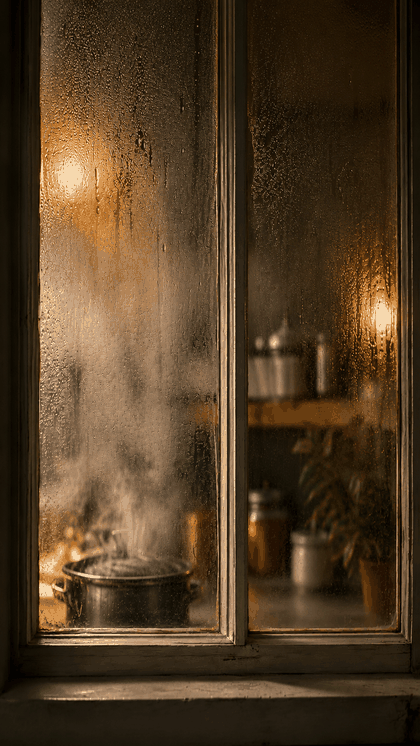
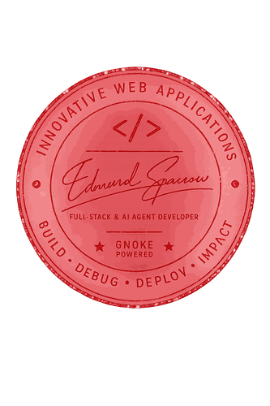

There is a particular pleasure in a publication that ends. A feed never closes; a magazine does. This edition was written, laid out, and finished — then set down, the way a printed issue used to land in your hands on a Tuesday and stay finished until the next one arrived.
Everything you're reading lives in plain HTML. No build step, no server rendering, no subscription. If you like it, install it from the button up top and it's yours — readable on a train, in a waiting room, anywhere the signal drops.
"One edition, one publication. Not a stream — a snapshot."
Turn the page when you're ready.
A recipe, if you're willing to read it that way.
There's a kind of cooking that has nothing to do with a stove. It starts with an idea half-formed, a pot you don't fully understand yet, and something helping you taste as you go — catching the salt before you burn your tongue on it. That's what building software with AI has felt like for three years now: not being handed a finished meal, but handed a very fast, very patient sous-chef who's tasted a thousand kitchens and still lets you hold the spoon.
The craft was never in the ingredients being expensive. It was in the mise en place — everything prepped, labeled, and in its place before the heat goes on. Write down what you're building before you build it. Write down what burned you last time so it doesn't happen twice. A kitchen without notes just repeats its own mistakes, confidently, forever.
"A dish that's confidently wrong and served anyway does more damage than one you admit isn't ready yet."
Three years of this, and the meal on the table keeps changing — the tools, the models, the recipes themselves. What doesn't change is the discipline underneath: taste everything twice, write down what broke, never plate something you haven't checked yourself. That part was never automated, and it's the part actually worth being known for.

Comfort Food went out into the DEV Frontend Challenge, and if @sylwia-lask, @francistrdev, @dannwaneri or @technogamerz have a plate to spare — come see what a community member put on the table this time.
— Edmund
CSS Art & Perfect Landing, judged, real deadline — Oct–Nov 2025.
CSS Art & Glam Up My Markup — this format's been running since 2024.
CSS Art & Glam Up My Markup, Love Language theme — same rules, different season.
Archived, one after another — the work was always real.
Roasted plantain, grilled fish, and a pepper sauce that argues back. If you don't know bolle, you don't know Port Harcourt.
Every evening in Port Harcourt, smoke rises off roadside grills as ripe plantain chars slowly over coal beside the day's fish. There's no menu and no seating — just a bench, a plate or nylon bag, and a pepper sauce recipe nobody writes down. Locals call it bolle, and outside Rivers State it barely gets talked about, which is the city's loss.
Every bolle spot has regulars who'll argue theirs is the real one — the fish should be fresh off the smoker, the sauce should bite back, and the plantain should never be rushed. Ask a Port Harcourt native to name the best joint and be ready for a whole debate.